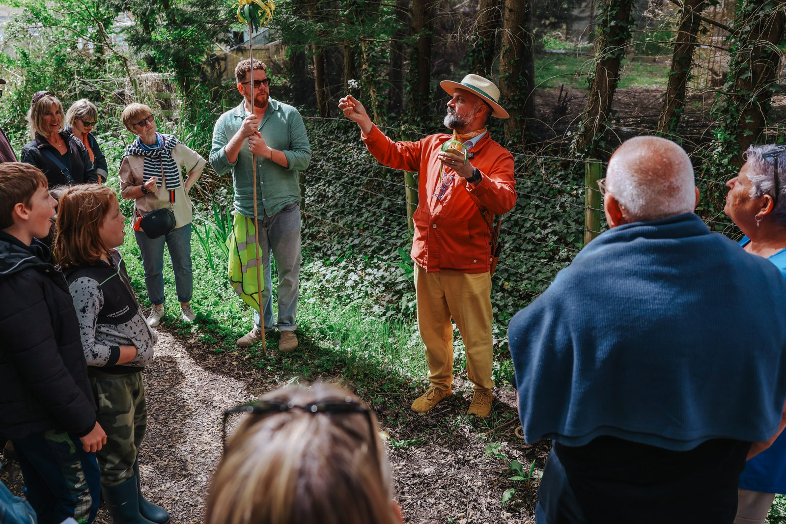
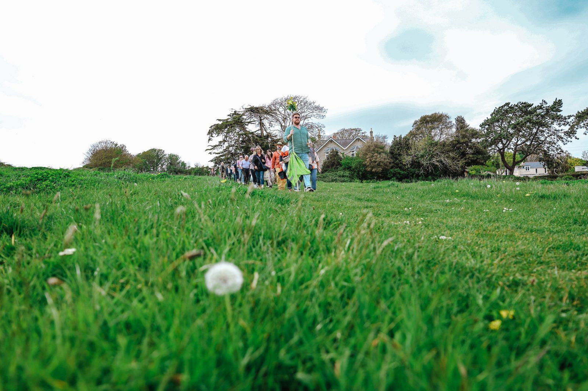
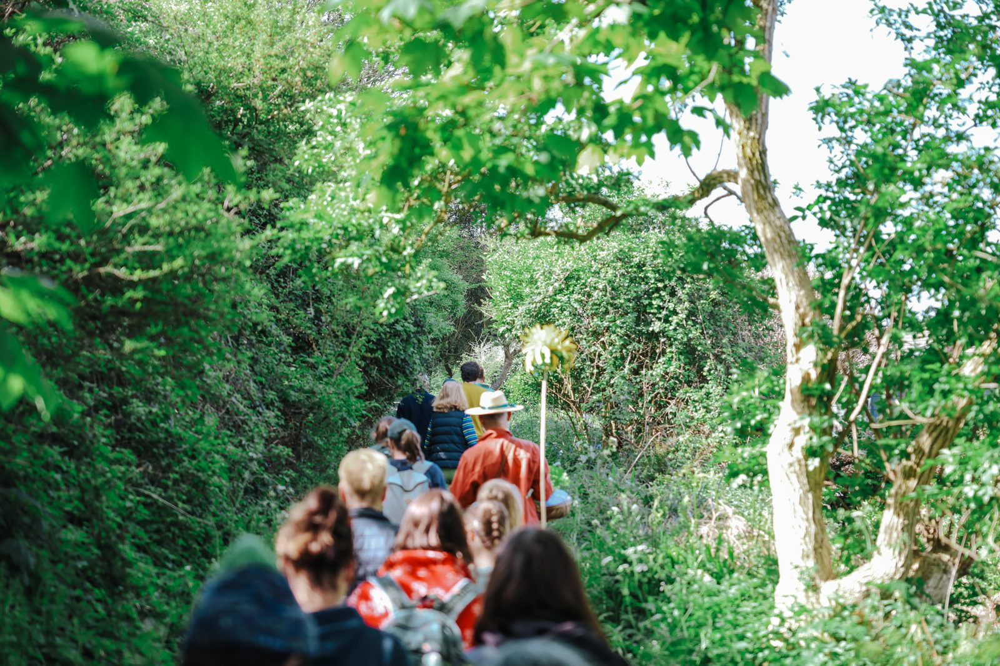
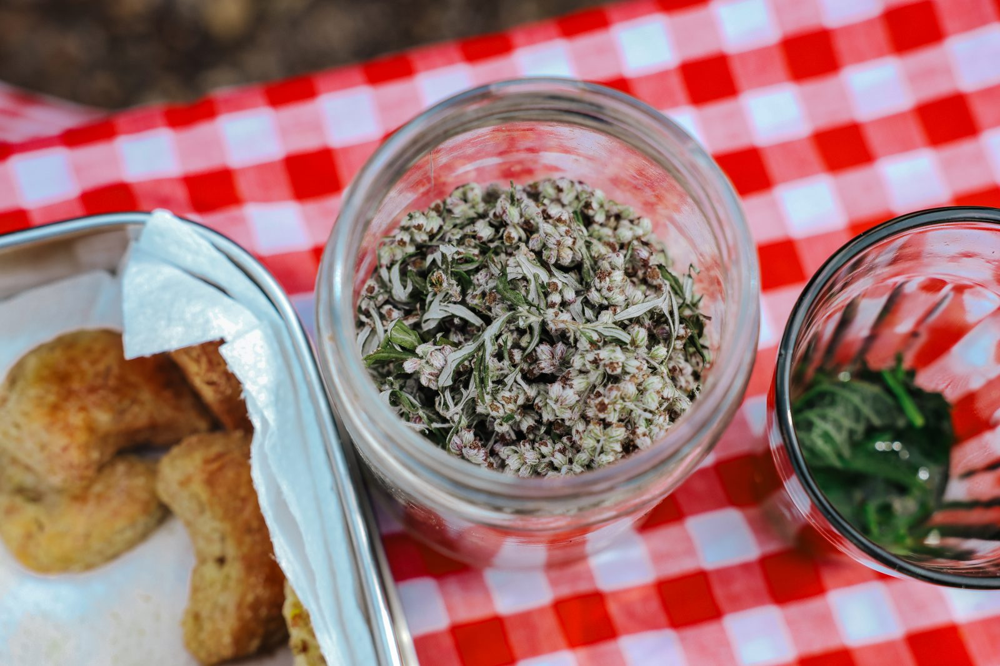
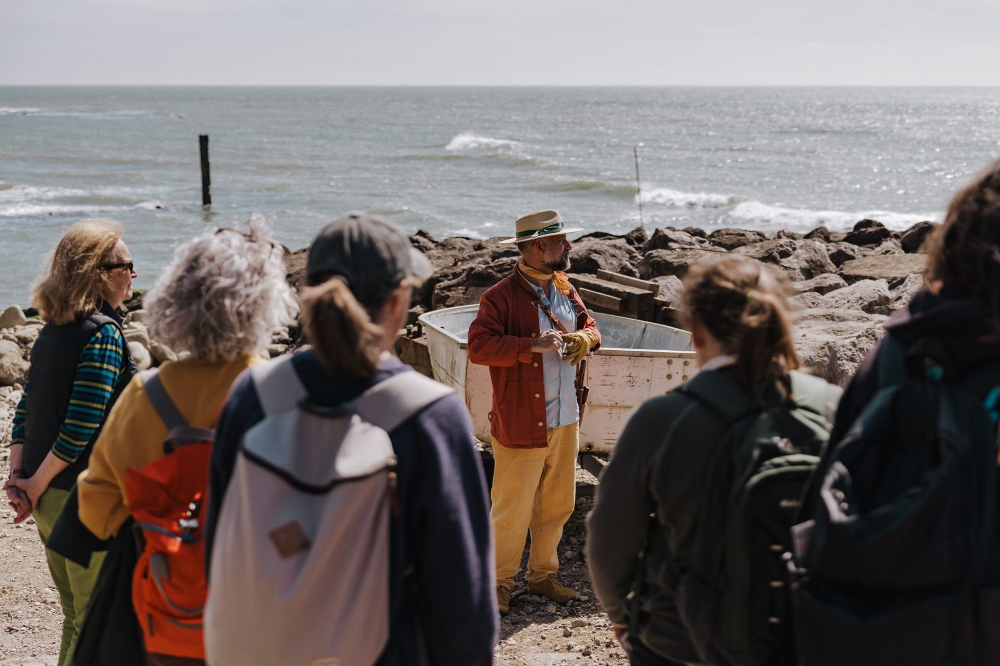
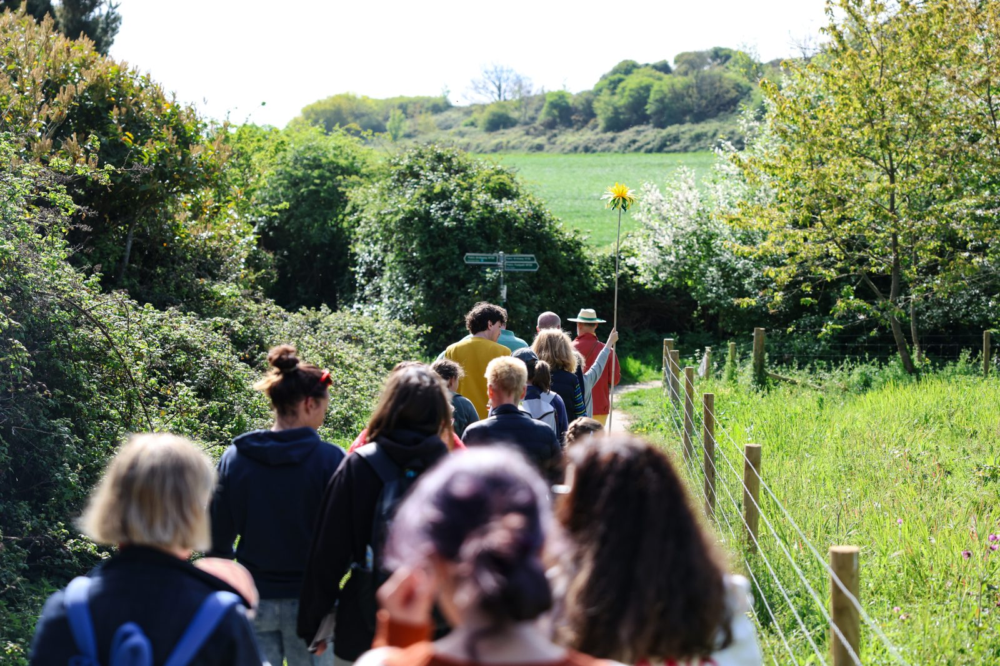
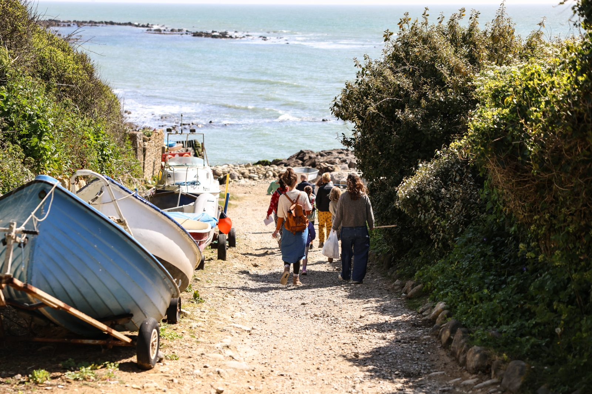

Past Events · Spring 2026
Foraging walks across the Isle of Wight: Niton, Shalfleet & Freshwater
This spring, the Somewhen Survival Society hosted a series of foraging walks across the Isle of Wight, bringing together more than 100 participants across three events in Niton, Shalfleet and Freshwater.
The walks provided an opportunity for people to slow down, explore the hedgerows and reconnect with the natural abundance found on their doorstep. Participants learned how to identify a range of seasonal edible and useful plants, discovered the folklore and traditional uses associated with local flora, and gained a greater appreciation for the Island's landscapes.
It was encouraging to welcome such a diverse group of attendees, from experienced foragers looking to expand their knowledge to complete beginners taking their first steps into the world of wild food and plant identification. Each walk sparked lively discussions, shared discoveries and a renewed curiosity about the natural environment.
From the Society's Archive







The foraging walk with the Somewhen Society was a breath of fresh air… literally! It was a beautiful blend of local Isle of Wight folklore, fascinating plant insights, and a truly mindful break from my busy week. The walk ended with delicious treats made from some of the flora and fauna, which was the icing on the cake for me really. I'd recommend it to anyone needing a little magic in their day.Wildwalk Participant
The strong turnout across all three locations demonstrated a growing interest in traditional skills, local ecology and sustainable ways of engaging with the landscape. We are grateful to everyone who joined us and helped make the walks such an enjoyable and successful part of our spring programme.
Thank you to all who took part, and we look forward to seeing you at future Somewhen Survival Society events.
The Harvest Moon arrives in September and October. Gather with us in village halls across the Island for an evening of foraged food, folklore and live performance.
See upcoming events